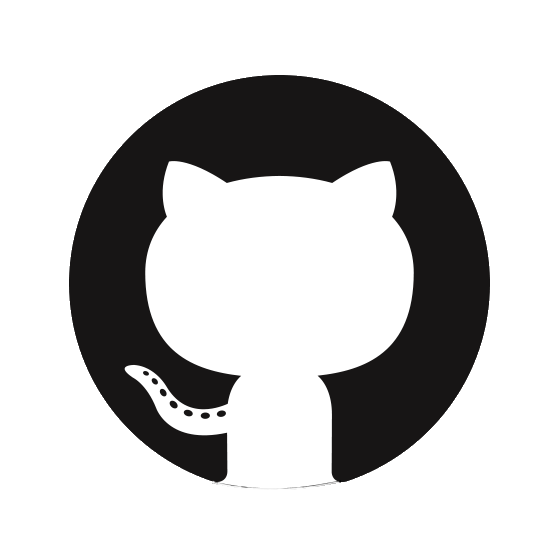

Bienvenue sur cette page html ! Ici vous aurez accès à de nombreuses informations sur les outils collaboratifs. Plusieurs onglets sont mis à votre disposition afin de mieux organiser la page. Dans cet onglet vous trouverez si vous défilez des informations sur le travail collaboratif avec une introduction courte afin de structurer nos conaissances sur les outils collaboratifs, et égalment par le biais de plusieurs exemples : le bitcoin, python ou encore github. Si vous cliquez sur l’onglet définition, vous trouverez une définition complète du travail collaboratif. Enfin si vous cliquez dans l’onglet sources, vous pourrez retrouver toutes les références de toutes nos sources, que nous avons utilisées pour créer le contenu de la page.
En 2012, les outils collaboratifs ont étés définis comme "des systèmes qui permettent à plusieurs personnes de travailler ensemble à distance en communiquant, en partageant des documents et en coordonnant leurs actions. […]" Nous pouvons y compter Wikipédia, Google Agenda, ou encore Google Drive, qui sont très populaires tous les trois. Ce sont des outils collaboratifs qui ont des tâches très distinctes.
Le Bitcoin

En savoir plus sur le bitcoin Cliquez ici
Le bitcoin est une monaie virtuelle décentralisée (Qui n'est pas gérée par un seul grand serveur). Elle ne peut exister sans ses collaboteurs. N'importe qui peut décider de collaborer. Que ce soit en contribut sur le code ou que ce soit en mettant a disposition sa puissance de calcul afin de faire les transactions. Le mineur (celui qui fait la transaction) recevra une petite commission. Le bitcoin est donc une monaie qui n'est pas génée par un banque dont le code n'est pas privé et où tout le monde peut contribuer.
Python

Définition
Python est un langage de script structuré et open source. Cette création de Guido van Rossum en 1989 est comme beaucoup d’outils et applications open source maintenu par des développeurs partout sur la planète. PyCharm, est un IDE propriétaire et open source pour le développement Python. PyScripter, est un IDE gratuit et open source pour le développement Python sous Windows. (IDE Investissement direct à l'étranger). Python nous permet de nous livrer à une programmation fonctionnelle ou impérative. Il est multi plateformes et conçu pour optimiser la productivité des programmeurs en offrant des outils de haut niveau et une syntaxe relativement simple à utiliser.
Histoire
À la fin des années 1980, le programmateur Guido van Rossum participe au développement du langage de programmation ABC. Il travaillait alors dans l’équipe du système d’exploitation Amoeba dont les appels systèmes étaient difficilement interfaçables avec le Bourne shell utilisé comme interface utilisateur. Il estime alors qu’un langage de script inspiré d’ABC pourrait être intéressant comme interpréteur de commandes pour Amoeba. En 1989, profitant d’une semaine de vacances durant les fêtes de Noël, il utilise son ordinateur perso pour écrire la première version du langage. Fan de la série télévisée Monty Python’s Flying Circus, il décide de baptiser ce projet Python. Il s’est principalement inspiré d’ABC. Durant l’année suivante, le langage commence à être adopté par l’équipe du projet Amoeba, Guido poursuivant son développement principalement pendant son temps libre. En février 1991, la première version publique apparaît 0.9.0. La dernière version sortie fut Python 1.2.
Github
 GitHub (exploité sous le nom de GitHub, Inc.) est un service web d'hébergement et de gestion de développement de logiciels. Ce site est développé par Chris Wanstrath, PJ Hyett et Tom Preston-Werner. GitHub propose des comptes professionnels payants, ainsi que des comptes gratuits pour les projets de logiciels libres, c’est à dire un logiciel dont l'utilisation, l'étude, la modification et la duplication par autrui en vue de sa diffusion sont permises, techniquement et légalement, ceci afin de garantir certaines libertés induites, dont le contrôle du programme par l'utilisateur et la possibilité de partage entre individus. Ces fonctionnalitées sont la base de Github et la raison pour sa popularité croissante. Pour cause en avril 2016, le site a annoncé avoir dépassé les 14 millions d'utilisateurs et plus de 35 millions de dépôts de projets, le plaçant comme le plus grand hébergeur de code source au monde. Le site assure également un contrôle d'accès et des fonctionnalités destinées à la collaboration comme le suivi des bugs, les demandes de fonctionnalités, la gestion de tâches et un wiki pour chaque projet. Github est pensé pour le travaille collaboratif jusqu’à son propre nom. Il est composé du mot « git » faisant référence à un système de contrôle de version open-source c'est-à-dire, qui donne des possibilités de libre redistribution, d'accès au code source et de création de travaux dérivés. Tout ça, mis à la disposition du grand public, ce code source est généralement le résultat d'une collaboration entre programmeurs.et le mot « hub » faisant référence au réseau social bâti autour du système Git, mais aussi à une plate-forme de correspondance qui est appelée en anglais un « hub » lui aussi fait pour le travaille collaboratif.Github est l’outil le plus utilisé pour collaborer, dû au fait que plusieurs personnes peuvent voir un code si elles y sont invitées et plus encore, elles peuvent proposer des modifications. Il faut croire que le concept plaît beaucoup car le 4 juin 2018, Satya Nadella, PDG de Microsoft, annonce que son entreprise Microsoft est dans un processus d'acquisition de GitHub pour 7,5 milliards de dollars.
Le Cloud
 Le cloud correspond à la disponibilité des demandes des ressources du système informatique , notamment du stockage de données et de la puissance de calcul , sans gestion active directe de l'utilisateur. Il désigne le stockage et l’accès aux données par l’intermédiaire d’internet plutôt que via le disque dur d’un ordinateur. Le cloud peut être limité à une seule utilisation pour une entreprise par exemple ou au grand public
Le cloud à été popularisé en 2006 grâce à Amazon (elastic compute cloud).
Le cloud est très utilisé aujourd'hui car il permet à des personnes choisies (ou à tout internet) de stocker des fichiers sans avoir recours à un stockage physique chez le client. Cela permet donc une collaboration 24h/24 7j/7 et simultanée des collaborateurs. Tous les services de cloud ne sont pas collaboratifs mais le permettent. Bien que le service le plus connu est google drive, les clouds pour l'hébergement et les profesionels ont plus de trafic on peut nomer AWS (Hébergement de Spotify, Netflix) ou Azure (Hébergement de sites de reservation de billets d'avion). AWS est détenu par Amazon et Azure par Microsoft.
Le cloud correspond à la disponibilité des demandes des ressources du système informatique , notamment du stockage de données et de la puissance de calcul , sans gestion active directe de l'utilisateur. Il désigne le stockage et l’accès aux données par l’intermédiaire d’internet plutôt que via le disque dur d’un ordinateur. Le cloud peut être limité à une seule utilisation pour une entreprise par exemple ou au grand public
Le cloud à été popularisé en 2006 grâce à Amazon (elastic compute cloud).
Le cloud est très utilisé aujourd'hui car il permet à des personnes choisies (ou à tout internet) de stocker des fichiers sans avoir recours à un stockage physique chez le client. Cela permet donc une collaboration 24h/24 7j/7 et simultanée des collaborateurs. Tous les services de cloud ne sont pas collaboratifs mais le permettent. Bien que le service le plus connu est google drive, les clouds pour l'hébergement et les profesionels ont plus de trafic on peut nomer AWS (Hébergement de Spotify, Netflix) ou Azure (Hébergement de sites de reservation de billets d'avion). AWS est détenu par Amazon et Azure par Microsoft.
Les services de cloud peuvent aussi être collaboratifs au lieu de seulement permettre la collaboration. Nous pouvons nommer tardigrade (anciennement storj) qui est un could où comme le bitcoin tout le monde peut y participer à tous les niveaux. Par exemple on peut proposer des modifications dans le code. Sinon un Node operator (personne qui vas mettre à disposition un ordinateur et du stockage afin de permettre au cloud de fontionner) peux contribuer elle recevra son paiement en cryptomanaire ce qui prouve l'utilité de celle-ci. Cette solution de cloud est plus sécurisée car les fichiers sont séparés en plusieurs morceaux que les storage nodes se partagent. Les parties hébergées par ceux-xi sont aussi crytées pour permettre une sécurité.